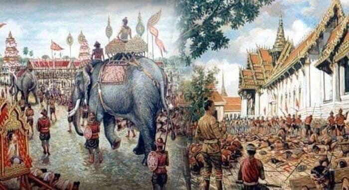
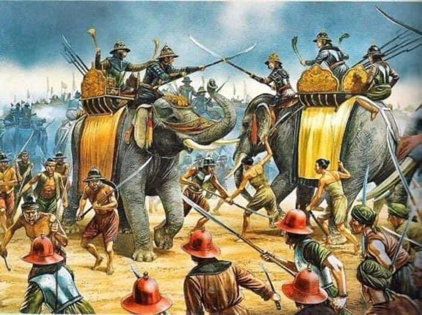

ខេត្តកំពង់ឆ្នាំង៖ បើយោងតាមប្រភពទំព័ររឿងបូរាណ គឺបន្ទាយលង្វែក (រូបគំនូរដែលជនជាតិបរទេសបានគូរក្រោយពេលបន្ទាយបានបែក) ។ សម័យលង្វែក (១៤៣១-១៦១៨) គឺជាសម័យក្រោយពីរជ្ជកាលព្រះបាទពញាយ៉ាត ដែលកាលនោះប្រទេសកម្ពុជាកើតមានចម្បាំងជាច្រើនលើកច្រើនសា។ រាជធានីត្រូវបានផ្លាស់ប្តូរជាច្រើនកន្លែងវិលចុះវិលឡើងពីក្រុងអង្គរ ទួលបាសាន្ត (កំពង់ចាម) ភ្នំពេញ (ចតុមុខ) រហូតមកដល់លង្វែក (កំពង់ឆ្នាំង)។ រាជធានីលង្វែកត្រូវបានកសាងឡើងរយៈពេល៣ឆ្នាំ គឺពីឆ្នាំ១៥២៧ ដល់ ១៥២៩ ក្នុងរាជព្រះបាទចន្ទរាជា។ បន្ទាយនេះមានបរិមាត្រ ទទឹងប្រវែង២សហាតិមាត្រ និងបណ្ដោយប្រវែង៣សហាតិមាត្រ (៣គ.ម×២គ.ម) ដែលមានរបងបីជាន់គឺ៖ ១.របងដី : ការពារទឹកចូលរាជធានី ២.របងទឹក : សម្រាប់យកទឹកប្រើប្រាស់ក្នុងរាជធានី ៣. របងឬស្សី : មានកម្រាស់២សិន (៨០ម៉ែត្រ) ក្រាស់ខ្មឹក សម្រាប់ការពារខ្មាំងសត្រូវ។ នៅកណ្តាលរាជធានីលង្វែក ព្រះបាទចន្ទរាជាបានសាងវត្តមួយឈ្មោះវត្តត្រឡែងកែង ដែលនៅសល់រហូតមកដល់សព្វថ្ងៃ។ ក្រៅពីបន្ទាយលង្វែក ព្រះបាទចន្ទរាជាបានបញ្ជាឱ្យកសាងវត្តអារាមជាច្រើននៅ ខេត្តពោធិ៍សាត់ បរិបូណ៍ ជួសជុលវត្តនៅឧដុង្គមានវត្តលើភ្នំរាជទ្រព្យជាដើម (ព្រះពុទ្ធរូបចូលព្រះនិពា្វន)។ ទីតាំងភូមិសាស្ត្រ រាជធានីលង្វែក ជាទីតាំងប្រវិត្តសាស្រ្តខ្មែរមួយដែលសព្វថ្ងៃស្ថិតនៅក្នុងស្រុកកំពង់ត្រឡាច ខេត្តកំពង់ឆ្នាំង ជាកន្លែងយុទ្ធសាស្រ្តមួយដោយមានទន្លេ បឹង ជាពិសេសព្រែក។ បន្ទាយលង្វែកត្រូវបានកសាងឡើងនៅក្នុងរាជធានី ដោយជីកបុកគ្រឹះរៀបថ្ម៦ហត្ថជុំវិញបន្ទាយជាបីជ្រុង ហើយលើកដីច្រុះក្ដារធ្វើបន្ទាយកម្ពស់១៤ហត្ថ កម្រាស់ខ្នងលើ១០ហត្ថ ជើងទេរខាងក្រោម២២ហត្ថ (១ហត្ថ=កន្លះម៉ែត្រ)។ ព្រះចន្ទរាជាបញ្ជាឱ្យមន្រ្តីឧកញ៉ាសេនាបតីកេណ្ឌរាស្រ្តកាប់ឈើ ជញ្ជូនថ្ម រែកដី ដើម្បីសង់បន្ទាយ និងរាជវាំង។ ទ្រង់បញ្ជាឱ្យគេធ្វើកំពែងការពារ៥ជាន់ ព្រមទាំងដាំរបងឫស្សីយ៉ាងក្រាស់។ ក្នុងកំពែងជាន់ទី១ ដាក់សុទ្ធតែទាហានកាំភ្លើងធំ ហើយនៅមុខកំពែងនេះ មានរោងដំរី និងរោងសេះ។ កំពែងទី២ ដាក់ទាហានកាំភ្លើងវែង សាលាជំនុំ សាលាដំបូង និងសាលាឧទ្ធរណ៍។ កំពែងទី៣ដាក់ទាហានអាវុធខ្លី មានដាក់ផ្គាក់ កាំបិត។ កំពែងទី៤ ដាក់ទាហានរក្សាព្រះអង្គ រោងល្ខោន និងព្រះពន្លាទតល្ខោន។ ចំណែកកំពែងទី៥ មានរោងបញ្ចក្សេត្រ និងដំណាក់សំរឹទ្ធ វិមានកម្សាន្ត រោងភិរម្យ ក្រុមបាគូ បុរោហិត និងក្រុមមហាតលិកនៅ។ ក្នុងកំពែងនេះដែរ មានរាជវាំងកំពូលប្រាំបិទមាស និងលាបម្រ័ក្សណ៍សម្រាប់ព្រះមហាក្សត្រាធិរាជផ្ទុំ ហើយមានតម្កល់វត្ថុស័ក្តិសិទិ្ធគឺ ព្រះកែវ ឬព្រះត្រឡែងកែង និងព្រះគោចំនួន១២ ដែលនៅក្នុងពោះព្រះគោទាំងនោះមានរក្សានូវគម្ពីរក្បួនសាស្រ្តាដ៏មានតម្លៃលើសលប់។ តាមជំនឿរបស់ខ្មែរ ព្រះគោ និងព្រះកែវជាបងប្អូនបង្កើតនឹងគ្នា ដែលអ្នកស្រុកតែងតែគោរពបូជាទុកជាវត្ថុស័ក្ដិសិទ្ធិ។ ដោយសារនៅក្នុងបន្ទាយលង្វែកមានរូបព្រះគោ ព្រះកែវ ប្រជាជនសម័យនោះមានជំនឿថា នេះជាបន្ទាយមួយយ៉ាងមាំសម្រាប់ការពារសត្រូវផង និងឃ្លាំងវប្បធម៌ជាតិផងបន្ទាប់ពីសម័យអង្គរ។ បន្ទាយលង្វែកត្រូវបានបែកបាក់នៅឆ្នាំ១៥៩៣ ដោយហេតុព្រះបាទសត្ថាទី១ ដែលជាចៅរបស់ព្រះចន្ទរាជា(អង្គចន្ទ) បានផ្ទេររាជសម្បត្តិឱ្យបុត្រាច្បងគឺព្រះបាទជ័យជេដ្ឋាទី១ ដែលទើបមានព្រះជន្ម១១វស្សា និងដកតួនាទីឧបរាជពីអនុជរបស់ទ្រង់គឺព្រះស្រីសុរិយោទ័យ ឱ្យបុត្រាទី២ ដែលទើបមានព្រះជន្ម៦វស្សា។ បញ្ហានេះធ្វើឱ្យប្រជារាស្ត្រលែងគាំទ្រ ហើយបះបោរគ្រប់កន្លែង។ ឮដំណឹងនេះ សៀមបានលើកទ័ពមកវាយខ្មែរតែមិនបានសម្រេច។ ក្រោយមក សៀមបានប្រើល្បិចបាចប្រាក់ឌួងចូលក្នុងព្រៃឬស្សី ឱ្យប្រជារាស្ត្រខ្មែរកាប់ឆ្ការ ទីបំផុតសៀមក៏វាយកម្ទេចបន្ទាយលង្វែកបាននៅឆ្នាំ១៥៩៣។
ផលវិបាកនៃការបាត់បង់បន្ទាយលង្វែក ក្រោយបន្ទាយលង្វែកបាក់បែកទៅ កម្ពុជាបានជួបនូវផលវិបាកជាច្រើនដូចជា៖ •ប្រទេសកម្ពុជាធ្លាក់ជាប្រទេសតូច ទន់ខ្សោយក្រោមចំណុះសៀម •ប្រជាពលរដ្ឋស្លាប់បាត់បង់ជីវិតយ៉ាងច្រើន •សៀមប្រមូលយកគម្ពីរ ក្បូនខ្នាត វត្ថុមានតម្លៃ ហើយចាប់ និងសម្លាប់អ្នកប្រាជ្ញខ្មែរគ្មានសល់។ តាមរយៈហេតុការណ៍នេះ ប្រជាជនខ្មែរបានប្រឌិតឡើងព្រេងកថាមួយ គឺរឿងព្រះគោ ព្រះកែវដើម្បីពន្យល់ពីប្រវត្តិសាស្ត្រដ៏ជូរចត់នេះ។ រឿងនេះប្រឌិតឡើងដើម្បីពន្យល់ពីមូលហេតុនៃការបាត់បង់ និងផលវិបាកពីការបាត់បង់បន្ទាយលង្វែកនេះឯង។ តួអង្គព្រះគោតំណាងឱ្យគម្ពីរ ក្បួនខ្នាតរបស់ខ្មែរ ឯព្រះកែវតំណាងឱ្យអ្នកប្រាជ្ញខ្មែរដែលសៀមចាប់យកទៅ។ ការកសាងបន្ទាយលង្វែកក្រោយពីព្រះបាទចន្ទរាជាវាយឈ្នះស្រីជេដ្ឋា (ស្តេចកន) នៅឆ្នាំ១៥២៥ រួចមក ព្រះអង្គក៏បញ្ជាឱយគេសាងសង់បន្ទាយលង្វែកចាប់ពីឆ្នាំ ១៥២៧ ដល់ឆ្នាំ ១៥២៩ ដោយប្រើរយៈពេល៣ឆ្នាំ។ ស្ថានភាពបន្ទាយលង្វែកជាចំណុចយុទ្ធសាស្ត្រមួយដែលមានទន្លេ បឹងបួរ និងព្រៃឈើជារបាំង។ បន្ទាយនេះមានរាងបួនជ្រុង បណ្តោយ៣គីឡូម៉ែត ទទឹង២គីឡូម៉ែត កំពែងដីកម្ពស់ ១៥ហត្ថ (៧.៥ម៉ែត) ហ៊ុមពទ្ធ័ដោយគូទឹក និងដាំដើមប្ញស្សីកំរាស់២សិន (១សិន = ៤០ម) ពទ្ធ័ជុំវិញ។ ក្នុងបន្ទាយលង្វែកមានវាំងស្តេច បន្ទាយទាហាន ផ្ទះស្រីស្នំ២២ រោងដំរី រោងសេះ ប្រាសាទពីរ ជីកស្រះធំ៤ គ្រប់ទិស ហើយចិញ្ចឹមត្រីព្រួល រ៉ស់ ឆ្តោ ព្រោះនៅជាប់មាត់ទន្លេសាប សង់ឃ្លាំង១៥ខ្នងសម្រាប់ស្រូវអង្ករ ត្រីងៀត ត្រីឆ្អើរ ប្រហុក ផ្អក….។ បន្ទាយលង្វែកមានទ្វារធំ៤ នៅទិសទាំង៤ និងទ្វារតូច៤នៅចំជ្រុងនៃទិសតូចទាំងបួន។ មានសួនច្បារធំ មានភូមិអ្នកស្រុក៤ មានវត្ត៥…។ ព្រះអង្គកសាងព្រះត្រឡែងកែង (ព្រះបែរភ័ក្ត្រទិសទាំង៤ ទល់ប្រឹស្ឋ = ខ្នងគ្នា) ព្រះកែវ និងព្រះគោ១២។ ក្នុងពោះគោដាក់គម្ពីរ ក្បួនខ្នាតជាច្រើន មានឯកសារមួយចំនួនដែលនៅសេសសល់តាំងពីសម័យអង្គរមកម្ល៉េះ ហើយព្រះអង្គបានប្រមូលផ្តុំអ្នកប្រាជ្ញបណ្ឌិតដើម្បីចងក្រងគម្ពីរឯកសារ និងបណ្តុះចំណេះដឹងដល់កូនខ្មែរជំនាន់ក្រោយ។ បន្ទាយ លង្វែកជាស្ថាបត្យកម្មដ៏ធំមួយ និងមានកេរ្តិ៍ឈ្មោះល្បីល្បាញខ្លាំង បើតាមសម្តីលោកអ៊ុក អ៊ូ អតីតមេឃុំលង្វែកនាឆ្នាំ ១៩៧០ គាត់ថាសេះពេញកម្លាំងមិនអាចបោលជុំវិញបន្ទាយលង្វែកបានឡើយ៕
